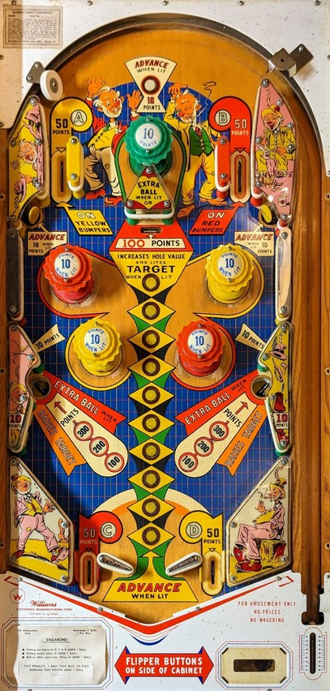

To complete the Advance column, press the 10 rollover buttons up the middle of the table in order from bottom to top; the top rollover button and upper left/right standup targets can spot a single Advance. Completing the Advance column increases the value of both lower saucers and lights the center drop target for extra ball. Making either lower saucer raises the center drop target if it is down. Raising the saucer value a single time makes it the most valuable shot in the game, so aim for them when possible.
The A, B, C, and D lanes around the table scores 50 points. Making one of these lanes for the first time awards that letter. Collecting all of A-B-C-D awards 1 extra ball. The A-B-C-D sequence never resets mid-game, so this extra ball can only be earned once per game.
The A and B top lanes also light the yellow and red pop bumpers respectively for the rest of the ball, regardless of whether or not the A or B letters have already been collected. Yellow and red bumpers score 1 point, or 10 when lit. The top green pop bumper always scores 10 points.
The upper left and upper right standup targets as well as the top rollover button award 10 points, and an Advance when lit. There is also a column of rollover buttons up the middle of the table, which all score 10 points; one of these buttons is lit. Making the lit rollover button in the column, or making the top button or upper standup targets when lit, moves the lit button in the center column upwards one step. Advancing the lit button past the top of the column causes the center drop target to be lit for Extra Ball next time it is knocked down, increases the value of the lower side saucers, and turns off the top button and upper standups so they can no longer give Advances for the rest of the game. The lower saucers start each game worth 100 points, and can be increased to 200, then 300, then Extra Ball. Collecting an Extra Ball resets the saucers to 300 points, but otherwise, the saucer value never resets or decreases during a game. The lower saucers also raise the center drop target, which scores 100 points if knocked down when it is not lit for Extra Ball. The status of the drop target and the position of the lit button in the center column are unaffected by starting a new game, so you can walk up to the table with the drop target already raised or the column just one step away from a completion.
At the bottom of the table, starting at the horizontal center and working outwards: two 2-inch flippers are placed in a conventional position, with a relatively standard flipper gap between them. Directly outside of the flippers are out lanes, which score 50 points and award C (left) and D (right). The position of these out lanes directly behind the flipper hinges mean it is impossible to trap a ball on a raised flipper. Outside of the out lanes are slingshots that extend to the edges of the table.
There is no end of ball bonus. Reaching predetermined score thresholds adds 1 ball. This is an add-a-ball game, so multiple extra balls can be earned during a single ball in play, up to a maximum of 10 balls remaining at any one time. A tilt ends the ball in play and subtracts one further ball from your current balls remaining total.
The below picture of Vagabond's playfield was taken from Pinside, where it is listed as image #3364891.
